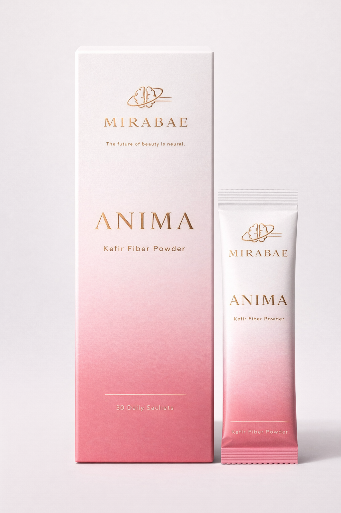

for myself
first. Anjelika
Founder
Based on a study from University of Nottingham, February 2026
New · Limited Pre-Launch
You're not broken.
Your signals are.
This is what most people call food noise.
Not a lack of discipline. A system out of balance.
Most women report feeling lighter, less bloated, and more in control within days.
These statements have not been evaluated by the FDA. This product is not intended to diagnose, treat, cure, or prevent any disease.
MIRABAE
ANIMA
Kefir Fiber Powder · 30 Daily Sachets
You think it's discipline.
It's not.
It's a loop.
Thinking about food even when you just ate
Cravings that feel louder than actual hunger
Cycles of control, then loss of control
Mental fatigue despite doing everything right
Skin and body not reflecting your effort
Bloating, heaviness, or a quiet inflammation you cannot trace
You try harder. More discipline. More structure. But the cycle does not end. It simply changes shape.
The Food Noise Signal Loop
When gut signals are unstable, your brain keeps asking for more — even when your body does not need it. This is not weakness. This is biology.
It is not your willpower.
It is your signals.
You do not have multiple problems. You are experiencing one system that is out of alignment.
Your gut and your brain are in constant conversation. When that conversation is disrupted, everything feels harder than it should. Not because of who you are. Because of what your system is missing.
"I didn't expect much. But within days, I just felt… calmer."
Early Tester
"The biggest difference? I stopped thinking about food all the time."
Pre-Launch Member
The Science
Mirabae · A brain-first approach to modern wellness
Your gut is not just digesting food.
It is talking to your brain.
Every hour of every day, your gut sends signals that govern hunger, mood, focus, and inflammation. When this communication breaks down — food noise, cravings, skin flares, low energy. Anima works at the source. Not with restriction. With biology.
In a 6-week study, kefir paired with prebiotic fibre outperformed omega-3 supplements in reducing inflammation markers — the broadest drop seen across all groups tested.
Journal of Translational Medicine, 2026
Research Source
University of Nottingham · February 2026
Journal of Translational Medicine
Microbiome Diversity
Feeds the bacteria that regulate hunger signals. A diverse microbiome produces the short-chain fatty acids and anti-inflammatory compounds your body needs to function quietly.
Gut-Brain Signalling
Supports a calmer gut-brain communication. Over 90% of serotonin is produced in the gut. When that signal stabilises, mood, appetite, and mental clarity follow.
Appetite Regulation
Helps reduce the internal inflammation linked to cravings and skin issues. Not by suppressing appetite. By recalibrating the signals that create it.
The Shift
From noise to alignment.
Before Anima
A low-grade heaviness you carry everywhere.
Skin that flares without warning.
An ache that no test can explain.
You have learned to live with it. But you should not have to.
After Anima
You wake up lighter.
Your skin settles.
The background noise your body was running — finally quiet.
Not because you changed everything. Because one signal did.

Before Anima
You think about food constantly.
Even after eating.
The cravings are not even for something specific. It is just static. A loop that does not stop, no matter how much willpower you apply.
After Anima
You forget about food for hours.
Not forced. Natural.
The quiet is unfamiliar at first. Then it becomes the new normal.

Before Anima
Fine in the morning.
Uncomfortable by afternoon.
You have tried everything. The pattern feels random. Nothing you can trace, nothing that helps.
After Anima
Your stomach feels like yours again.
At 8am and at 8pm.
Balance is boring. In the best possible way.
Before Anima
Doing everything right.
Still not feeling at home in your body.
The effort does not match the result. That is not a character flaw. That is a signal problem.
After Anima
Your body starts to make sense again.
Not a number. Not a rule. A body that finally works with you instead of against you.
Most women notice a real difference within 5 to 7 days.
Not a tweak. A turning point.
Questions
Everything you need to know
before you reserve.
Join the first circle. Before we launch.
Most women spend years trying to fix this.
Designed around how the gut-brain axis is understood to work.
Two ways to be part of the Anima launch. Choose the level that feels right for you.
Follow the journey
Be the first to know when Anima launches. Get research updates, formulation insights, and early access notification with no commitment required.
Reserve your first box
Lock in your box before public launch. Pay nothing now. You will be invoiced at launch, before anyone else gets access.
Option 1 — Subscribe and Save
Founding member rate. Cancel anytime. Invoiced at launch.
Option 2 — One-time purchase
No subscription. One box, 30 sachets. Invoiced at launch.
Limited to 200 founding customers · Your spot is held